|
风来之西林外传 ～女剑士飞鸟见参～
◆ ムラドの试练图文攻略 ◆
作者：kenyo
『风来人绝对领域』版权所有，禁无断转载！
41F 一时忍耐的反射
Tips：很简单，我就不多说了，看参考步骤吧：上1步，向左使用吹飞之杖，下1步，左1步，空挥6次，向左使用一时忍耐之杖，向左投掷一时忍耐之杖，下楼梯。
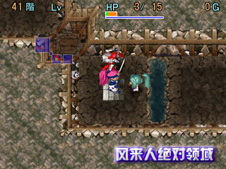
42F 水・凤凰・圣域
Tips：持剑怪物属于カタナ系，用水可降低其攻击力，未将剑豪的攻击力降为0时不要拾起圣域卷物，这是解题的关键。参考步骤：右2步，用水壶装水，站在圣域卷物上（不要拾起），对剑豪泼水4次，拾起圣域卷物，左3步，右上1步，右下1步，右1步，将圣域卷物放在地上，轻轻的摸剑豪一下，小凤凰会飞来回复其HP，这时径直向右走，下楼梯。
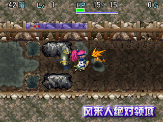
43F 龙头怪的遁地术
Tips：根据龙头怪的特性，其后面有怪物时会使用遁地术潜到飞鸟背后进行两面夹击，这就是破题关键。参考步骤：右1步，向右使用场所交换之杖，右2步，下3步，右5步，上3步，右下1步，右3步，右下1步，下1步，空挥1次，向下使用场所交换之杖3次，向上使用场所交换之杖1次，拾起脚下的ンドウパ，上2步，左上1步，左3步，左下1步，下1步，左5步，向下投掷ンドウパ，向下投掷场所交换之杖，下楼梯。
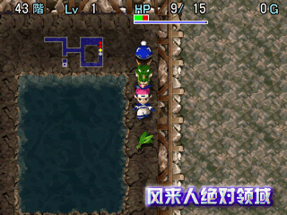
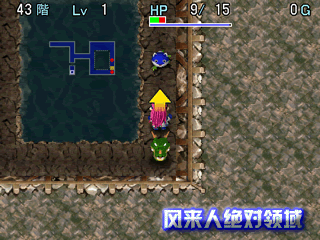
44F 战车别动队
Tips：这个谜题很滑稽，给出了众多道具，但只需要一时忍耐之杖就够了，其他都是多余的。参考步骤：上1步，左下1步，左6步，向左使用一时忍耐之杖，向左上使用一时忍耐之杖，向左投掷一时忍耐之杖，左2步，左上1步，左下1步，左上1步，左下1步，左上1步，右1步踩圆木机关撞死玛姆鲁，下楼梯。
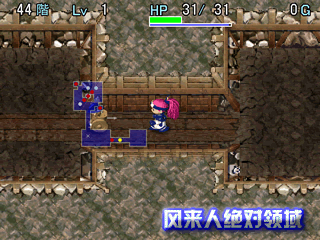
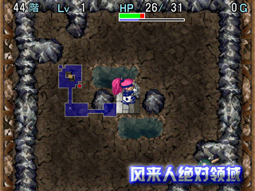
45F 火炎壁障2 ～火柱之杖～
Tips：只要用火柱之杖制造出火炎壁障挡住子供战车的木箭攻击就能过关了。参考步骤：向右使用脚下的火柱之杖，拾起脚下的火柱之杖向右上方向使用，上1步，向右使用火柱之杖，右上1步，右下1步，下楼梯。
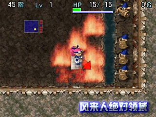
46F 烧烤河童
Tips：河童发现地上有道具时会拾起扔给飞鸟，而此题的道具是金钱，对飞鸟的杀伤力是致命的，解题关键是在特定位置喷水制造“火炎真空地带”，另外要注意的是未杀掉河童之前不要捡任何钱，有些人就是因为贪钱才过不了关的。参考步骤：右上1步，利用水壶装水，右下1步，左下1步，右上1步，右5步，右上1步，向左上喷水，读炎上之卷物，左上2（不要拾起金钱），空挥1次，右下1步，等火柱消失后下楼梯。
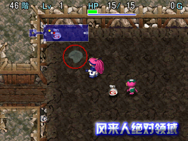
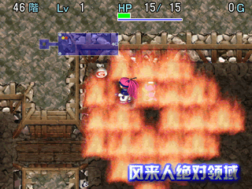
47F 偷盗怪的妙用
Tips：解题关键是将偷盗怪殴打至半死不活的状态之后放生，利用其盗取水域对岸的吹飞之杖，待其飞至另一房间后再K死它收回杖。参考步骤：上1步，向左使用吹飞之杖，右上2步，上1步，右上2步，非人道殴打偷盗怪24次，下1步，向右下使用场所交换之杖，拾起脚下的远投之腕轮（暂不要装备），向左使用场所交换之杖，上1步，加速回复HP至满点，下1步，向右投掷吹飞之杖，飞至原来的房间后看准偷盗怪的位置K死它（如果它躲在水里就引诱它出来，不过不要与クロウ丸或者扔毒草的萝卜头在同一直线上），K死偷盗怪后拾起吹飞之杖，在HP保持满点的状态下走至クロウ丸右边的位置向其投掷吹飞之杖（不要装备远投腕轮），这时装备远投腕轮向左投掷弟切草干掉2个萝卜头，最后向左投掷场所交换之杖下楼梯。
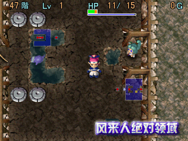
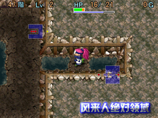
48F 钝足猫头怪
Tips：此题解法是我原创的，与日文西林站点的公版解法有很大不同，地图最上面的发怒之杖和虎王都是不需要的。解题关键是拿到毒草，并利用无赖法将多边形K死，剩下的1个毒草对猫头怪使用。
参考步骤：上1步，空挥1次，下2步，左2步，上2步，右2步，下2步，左1步，向右使用吹飞之杖，右1步，向右使用场所交换之杖，上10步，右9步，右下1步，右上1步，右1步，向右下使用场所交换之杖，拾起脚下的毒草，空挥1次后向右下使用场所交换之杖，用脚下的毒草向多边形投掷，再次向右下使用场所交换之杖。
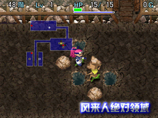
右上2步，左上2步。好了，这时使用“攻击1次→右一步→攻击1次→左1步→攻击1次→右一步”的无赖法K死多边形，必须攻击48次。之后返回有楼梯的房间，对猫头怪投掷毒草，然后用场所交换之杖与其交换位置，接着引诱其走到图示的位置，再连续对其投掷吹飞之杖和场所交换之杖就能到达楼梯处。
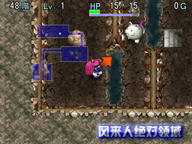
49F 穿墙腕轮与盗钱怪的活用
Tips：解题关键是利用其中1个盗钱怪盗钱瞬飞之后挡住子供战车的攻击，以便取到穿墙腕轮，而左上的洞窟玛姆鲁可在墙壁内解决。参考步骤：右1步，下1步，右下1步，右1步，右下1步，左下1步，右上1步，非人道殴打左下的盗钱怪致死，左下1步拾起钱，右上1步，上2步，空挥2次，吃下高飞草，向右走拾起穿墙腕轮之后装备，下1步走出该房间，解除穿墙腕轮飞回原来的房间，待HP回复满点后装备穿墙腕轮向左上角的房间行进，靠近洞窟玛姆鲁后在墙壁内解决它，HP不够是用困时卷物回复，解决之后下楼梯过关。
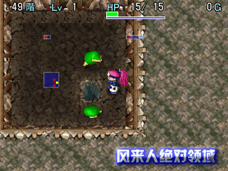
50F 人道毁牛4 ～毒箭刑～
Tips：解题关键是熟知毒箭射出的方向，以此将牛战士的攻击力降为0，这就涉及到一个高级技巧――“毒箭方向定律”，而这个技巧对突破カカ・ル�`の试练50F是非常有积极意义的。参考步骤：下1步，上1步，左上1步，下2步，面向左踩脚下的毒箭机关，左下1步，左1步，左上2步，左9步拾起困时之卷物，上1步，下2步，读困时之卷物，右下1步，右上1步，上1步，右1步，装备曲折腕轮，向左下发射大炮之弹，右7步，向下发射大炮之弹，右上1步，右2步，下1步，对左上的牛战士攻击2次令其死亡，面向左下踩脚下的毒箭机关，攻击1次K死左下的牛战士，面向右下踩脚下的机关，攻击1次K死左边的牛战士，下1步，左下1步，左2步，左上2步，左10步，下楼梯。
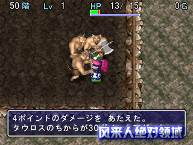
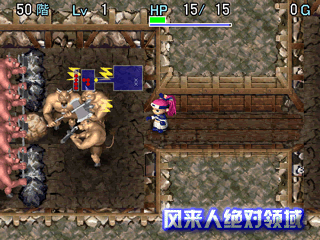
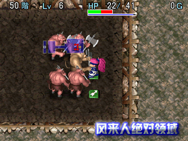
“毒箭方向定律”的基本内容是：
飞鸟面向上方踩毒箭机关，毒箭从飞鸟右方射来，飞鸟右方的怪物受到毒箭的攻击；
飞鸟面向左上方踩毒箭机关，毒箭从飞鸟右上方射来，飞鸟右上方的怪物受到毒箭的攻击；
飞鸟面向左方踩毒箭机关，毒箭从飞鸟上方射来，飞鸟上方的怪物受到毒箭的攻击；
飞鸟面向左下方踩毒箭机关，毒箭从飞鸟左上方射来，飞鸟左上方的怪物受到毒箭的攻击；
飞鸟面向下方踩毒箭机关，毒箭从飞鸟左方射来，飞鸟左方的怪物受到毒箭的攻击；
飞鸟面向右下方踩毒箭机关，毒箭从飞鸟左下方射来，飞鸟左下方的怪物受到毒箭的攻击；
飞鸟面向右踩毒箭机关，毒箭从飞鸟下边射来，飞鸟下边的怪物受到毒箭的攻击；
飞鸟面向右上踩毒箭机关，毒箭从飞鸟右下边射来，飞鸟右下边的怪物受到毒箭的攻击。
kenyo解说：上面就是“毒箭方向定律”的全部内容，什么，太长难记？那就简化一下啦：“面上－箭右，面左上－箭右上，面左－箭上，面左下－箭左上，面下－箭左，面右下－箭左下，面右－箭下，面右上－箭右下”。什么，还是难记？靠！服你了！记住这句经典浓缩定律吧：“毒箭必定从飞鸟面对方向时的右方射来”。其实，此定律不仅适用于毒箭，也适用于木箭、铁箭和圆木机关。另外，此定律同样适用于使用车轮发动怪物脚下机关的场合。
|